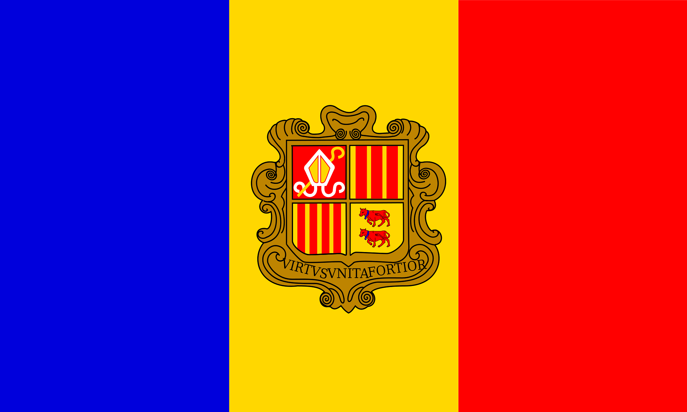

Andorra – Ein kleines Land in den Pyrenäen
Andorra liegt zwischen Spanien und Frankreich in den Pyrenäen.
Die Hauptstadt ist Andorra la Vella.
Geografie und Klima
Das Land ist stark bergig.
Die Winter sind kalt und schneereich, die Sommer mild.
Geschichte und Kultur
Andorra existiert seit dem Mittelalter und ist ein Fürstentum.
Traditionen sind eng mit den Bergen verbunden.
Sprache und Regionen
Die Amtssprache ist Katalanisch.
Viele Menschen sprechen zusätzlich Spanisch und Französisch.
Wirtschaft und Tourismus
Tourismus, Wintersport und zollfreier Handel sind sehr wichtig.
Fazit
Andorra ist klein, aber wirtschaftlich stark und touristisch beliebt.